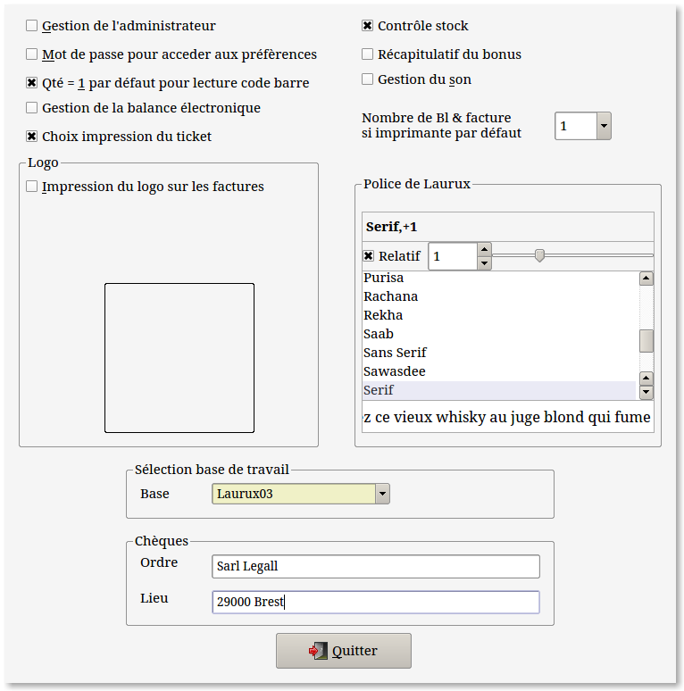

~ Laurux.Pos ~

~ Laurux.Pos ~ |
|
|
|
Paramètrage de la caisse.

Ce menu est accessible en faisant ALT + P sur le menu d'accueil de Laurux.Pos. Ce paramètrage est à faire séparément sur chaque caisse puisqu'il va générer un fichier de configuration nommé "Laurux.Pos.conf" situé sous le repertoire caché /.config/gambas3.
Le bouton "Gestion de l'administrateur" permet d'activer la gestion de l'administrateur, c'est à dire que sur certaines opérations on devra saisir le mot de passe du vendeur qui aura été déclaré comme administrateur dans la table des vendeurs.
Le bouton "Mot de passe pour acceder aux préfèrences" activera une fenêtre de saisie du mot de passe administrateur avant d'ouvrir le menu des préfèrences
Par sécurité, on devra cocher ce deuxième bouton
dans le cas ou la gestion de l'administrateur est activée.
Dans le cas d'une lecture de code barres, on peut définir si la quantité sera égale à 1 par défaut. Dans ce cas, la validation du produit se fera automatiquement. Si on a plusieurs produits, on peut faire "F5" avant d'effectuer la lecture du code barre afin que le programme s'arrète sur la zone "Quantité"
Le bouton "Choix impression ticket" offrira la possibilité de ne pas imprimer le ticket après la saisie du règlement.
Le bouton "Contrôle stock"
va demander au programme de contrôler la quantité en stock du produit.
Si cette quantité est inférieure à 1 alors on aura un message d'alerte
et la saisie du produit sera impossible.
Le bouton "Récapitulatif du bonus" permet d'afficher le bonus en bas du ticket si on travaille avec un client caisse.
Il est possible de définir le nombre de facturette ou de BL a imprimer grâce au bouton "Nombre de BL & facture" permet
On peut définir l'impression du logo sur les tickets ou les facturettes lorsque c'est l'imprimante par défaut qui est déclarée.
Lors de la première utilisation, il faudra définir la société de travail utilisée par Laurux.pos.
Cet écran permet également de saisir les données qui seront imprimées sur les chèques.
Il permet aussi de définir la taille de la police utilisée par Laurux.Pos
La taille peut-être relative à celle du gestionnaire
de fenêtre. +1, +2 si on souhaite aggrandir, -1, -2 si on souhaite
diminuer ou 0 si on souhaite garder la même taille de caractère. Si le bouton "Taille" est coché elle
pourra être determinée par une valeur fixe, 8, 9, 10, 11
etc...
Modifier la taille des caractères modifie la taille des fenêtres de Laurux.Pos.
----------------------------------------------------------------------------------------------------------------------